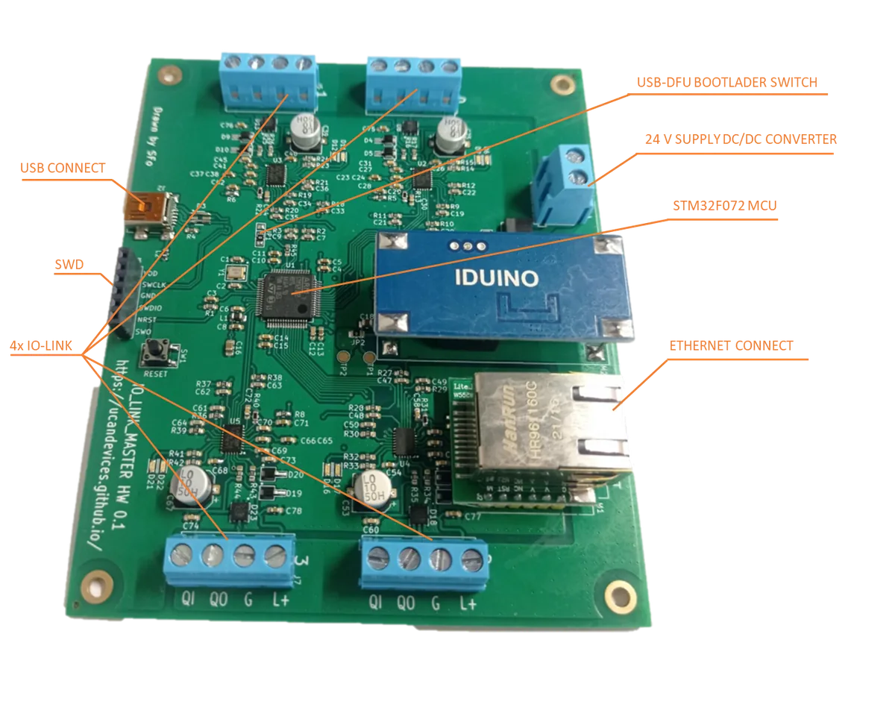
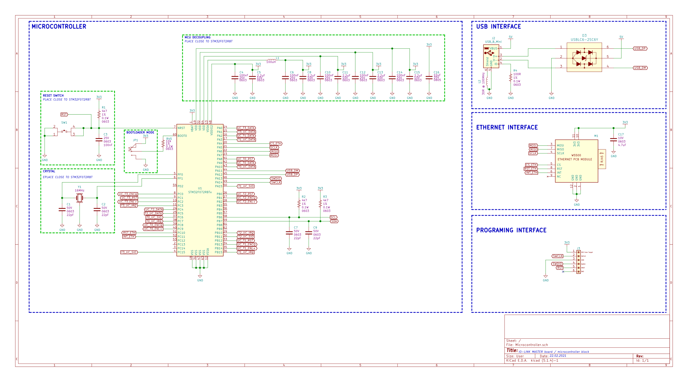
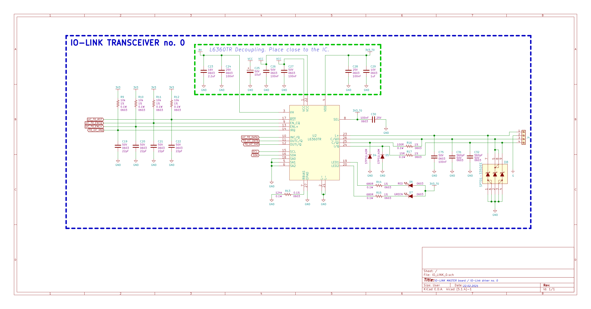
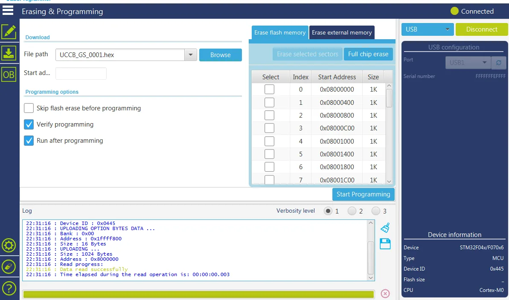

IO-Link master interface over USB or Ethernet. Talk to IO-Link sensors from a PC for lab work and prototyping.
Buy with Card Buy on Tindie Source on GitHub
Product and its documentation is supplied on an as-is basis and no warranty as to their suitability for any particular purpose is either made or implied. Producer will not accept any claim for damages howsoever arising as a result of use or failure of this product. This product is not intended for use in any medical appliance, device or system in which the failure of the product might reasonably be expected to result in personal injury.
IO-LINK Phisical layer conveter to USB/Ethernet converter. Pipes most of IO-LINK traffic to PC, to simply plaining with IO-LINK sensors.

For proper work on Windows you need to install virtual com drivers from ST site or download from here .
We are using STM32F0 microcontroller. Device PCB is designed in ki-cad. All source files are available in github here.


Converter software is pure C code written in free version of STM32Cube IDE studio. All sources and releases with compilation instructions are available in our github here.
Production files:
newest version
UCCB have got embedded DFU USB bootloader. To upload new firmware use STM32CubeProgrammer software supplied by ST microelectronics. To upload new firmware follows those steps:

Python Tools
See newset sources